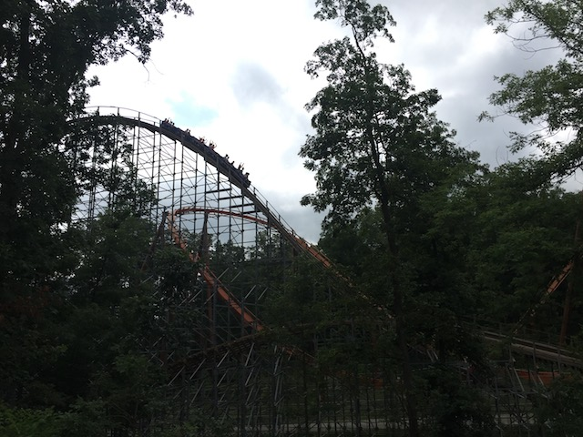
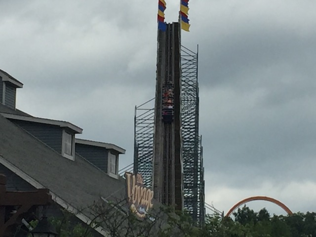
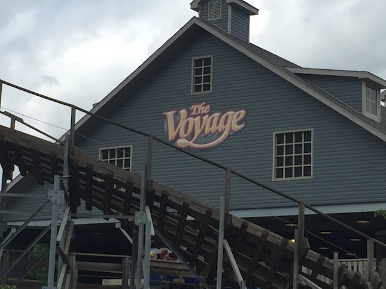
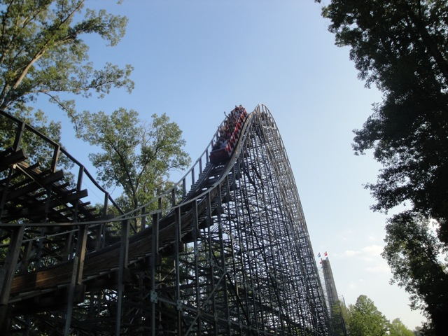

| |
Voyage Review

Today, we'll be heading over to Holiday World where we'll be reviewing the Voyage. The parks biggest coaster and it's definetly my favorite in the park. You hop in the seat, pull down the lap bar, and away you go! You head down a small dip and then start climbing up the lifthill. Up and up you go. It seems like the climb will go on forever as you just keep climbing higher and higher up the lifthill. When you finally do make it to the top of the lifthill, you take a look down and just realize how high up you are. But just like that, you fall down the first drop. The first drop is great and really pours on the speed as you fall down. Wind flies in your face at the bottom of the drop as you start to question whether wooden coasters can go that fast before you rise up into the first hill. The hill is really cool as you just soar over the hill. There's some decent floater air on this bunny hop, but it's nothing special. We then drop back down to the ground as we continue to head deeper into the forest. We then head into yet another bunny hop. This one has a little bit of a turn to it, but there's no laterals. And its pretty much just like the last bunny hop. Just gracefully soar over the hill, get some floater air, drop back down. The only difference is that when we drop back down this time, we get to TAKE THE TUNNEL!!! That doesn't last that long as we fly over an airtimeless hill before we TAKE THE TUNNEL AGAIN!!! Only to fly out and head into another small hill that offers no airtime just to drop back down and TAKE THE TUNNEL YET AGAIN!!! OH MY GOD!!! HOW MANY F*CKING TUNNELS ARE ON THIS RIDE!!?Are you trying to set a world record here Holiday World? Anyways, we blast out of the tunnel and blast through a sharp turn. All right, before I continue on with this review, I have to just point out one thing about Voyage that most people never do. THE AIRTIME SUCKS!!! So many enthusiasts when they talk about how great the Voyage is, they'll go on and on about the Voyage and how great the airtime is. BULLSH*T!!! Voyage doesn't suck for airtime as the ride does have some nice floater air throughout the ride, which is above average airtime wise. So I guess I apologize for the "THE AIRTIME SUCKS!!!" crack. But the best? Have you seen what the best airtime rides are like? El Toro, Balder, and Coaster will really send you in for a surprise if this is top quality airtime for you. Though I do really love Voyage. Just not for the airtime. The three rides I mentioned above are the KINGS of airtime and ALL of them are better than the Voyage. But why then do I still think so highly of Voyage? Well first off, this ride never loses its speed. It just flies through everything! OK, yeah. It has the super harsh mid course brakes, but it recovers from it quickly. And more importantly, THE LATERALS!!! THE LATERALS ON THIS THING ARE INSANE!!! You are thrown around from side to side, and when you go 90 degrees, you f*cking feel it. I love how it pushes the limits and gets so aggresive towards the ground. I love how aggressive it is that you feel the trains ripping themselves apart. Sure it makes the ride rough, but you can tell just how agressive this ride is and appreciate it. And speaking of the insane laterals, that's the part of the ride we're going to go through now. We go through a highly banked S Curve that just tosses us from side to side. Hope you like that seat divider. We then go through a low to the ground turnaround. This not only pours on the laterals, but due to its low to the ground nature, we can really get a feel for just how fast we're going. We then go through a little straight track. We're still shuffling and buzzing through when we suddenly go through it. Our first 90 degree turn. We just keep leaning and leaning until we're 90 degrees. And yeah. You feel 90 degrees unlike on so many rides where you don't even know unless you're looking at it offride. You can close your eyes and really feel the 90 degrees. It doesn't last that long, but don't worry. Here comes another one! YAY!!! 90 DEGREES!!! I really love how even when you're completely on your side, you can still really feel the shuffling and get an ass massage. Oh man, night rides on this thing would be so f*cking awesome. Anyways, after that 90 degree madness, we go through another turn at crazy speeds and blast through yet another tunnel. Oh yeah, we're still holding our speed from the first drop. We can hold this forever. We just went through that madness, we're gonna fly through the rest of the...and then the mid course brakes stop us. F*CKING MID COURSE BRAKES!!! Oh, this isn't just your ordinary mid course brakes. THESE THINGS F*CKING STOP YOU COMPLETELY!!! It's like on Goliath and Titan when it runs too many cars and has you stopped in the middle for a minute. I really hate this as it totally ruins the insane pacing that the ride had going for it. =( Anyways, we start crawling down a drop into a tunnel. Like I said before, trying to set a world record Holiday World? The drop is ok, but then we head down another drop. We're starting to gain a little bit of our speed back, and BAM!!! Another small drop. This one had some mild ejector air to it. Yeah, this is a bummer because I really feel that if it wasn't for that super harsh mid course, there'd be some really awesome ejector air in the triple down. So while other enthusiasts can say to me "You just caught Voyage on a bad day. Wait till you see the triple down untamed." Yeah, that sounds believeable, but most enthusiasts also overhype the airtime in the first few hills, which were not tamed by trims or a mid course. So my overrated airtime comment still applies. We then go through a couple more airtime hills without airtime, but the good news is that we seem to have gotten most of our speed back and can still haul through the final section. We then fly through a couple more crazy turns that thrash us from side to side and shuffle our way to another surprise. ANOTHER 90 DEGREE TURN!!! These things are just freaking amazing. We roar through a couple more crazy turns and floater air hill that goes above the lifthill before dropping down into yet another tunnel. Seriously, I think Holiday World got a little carried away. When the old Terminator Soundtrack screamed "TAKE THE TUNNEL!!!", they didn't think you'd be this obsessed about taking it. Give the poor tunnel a break for crying out loud. We then rise up a small hill before twisting back down. Seriously, this ride goes on forever. Unlike on most rides where it just ends, here you expect it to end, and they surprise you with some more twistiness or an airtimeless or floater air hill. And I just love that. So after that small hill we twist back down into another tun...GOD DAMN IT!!! I'm starting to think that Voyage was meant to be an indoor coaster and Holiday got too lazy to finish it, so they just left it as a bunch of tunnels. We then go through a helix that leads us straight to the brake run. So while I don't find Voyage to be the greatest ride ever nor do I find the airtime on it to be good, OK, that's too harsh. It's good, but just not NEARLY as good as other people claim it to be. But I love the Voyage. I love how fast it goes, how well it can maintain its pace, even with horribly awful mid-course brakes in the middle, I love the insane laterals, I love how it's not afraid to get really mean and aggressive, and I love just how freaking long it is. While I've been on longer coasters, as far as just how long a ride feels, this feels the longest. Now while this isn't a problem for me, but the aggressiveness has really made the ride really rough. For a lot of people, it's to the point of being horrendus. Well, Holiday World was supposed to put Timberliner Trains on it for 2010 when I rode it. But they didn't. Then they were supposed to come in 2011. They didn't. They didn't get them for 2012, then in 2013, Hades 360 reopened with Timberliners and the reviews of it were HORRENDOUS!!! After hearing that, Holiday World scrapped the Timberliners for Voyage. Bummer, they did all that work on them. But at least they know that just adding Timberliners will not fix the problem, though I do love those trains. Anyways, do not miss Voyage. It's a great wooden coaster that'll certainly take you for a wild ride.
9/10
Location: Holiday World
Opened: 2006
Built by: The Gravity Group
Last Ridden: June 27, 2018
Voyage Photos









Home
|